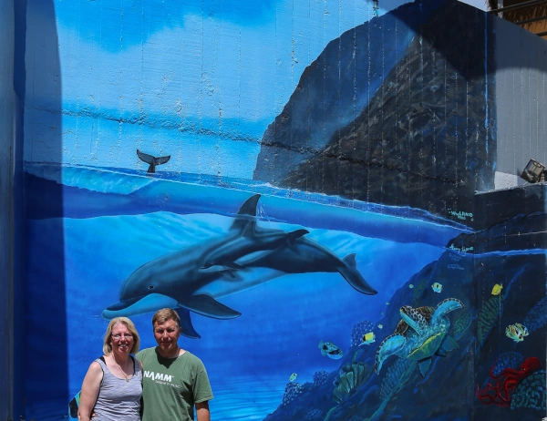

In Search of Wyland Walls

I am always wary of walls that are in locations where you have to pay to get in. After finding so many extinct walls I was concerned about paying admission to Sea Life Park just to see Dolphins off Makapuu Point. We managed to find a way around that though. We signed up to go swim with the dolphins which was a great adventure and got us into the park so we were able to see the wall also. The wall looks recently restored as the colors are vibrant. The wall is in a great location in the park and I’m sure many people get to see it.
Sea Life Park, Oahu, Hawaii
24 Feet Long x 30 Feet High
Dedicated in 1988
Excerpt from @wylandfoundation on Instagram
When Wyland climbed up on his scaffolding to paint Whaling Wall 15 at Oahu’s @sealifepark, he had planned to paint Pacific bottlenose dolphins only. But, when he turned around and looked back at the sea, he saw a breathtaking view of the beautiful turquoise and azure waters of Makapuu Point, and he changed his mind.
The mural at the popular park now bears the life-size bottlenose dolphins Wyland had wanted to paint, but it also shows the stunning landmark of Makapuu Point in the background. “I have a special love for Sea Life Park and this area because this is where I conducted much of my research on dolphins and other sea creatures,” the artist says.
Singer/songwriter Henry Kapono, a good friend of Wyland’s, dedicated the wall and then gave a concert at the park in honor of the mural. The singer has since written a special song for his friend called “Wyland’s Song.”